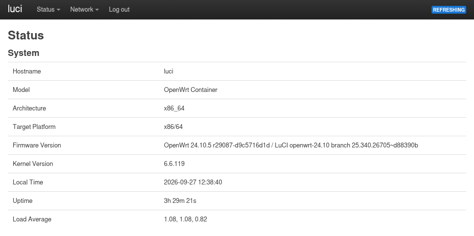
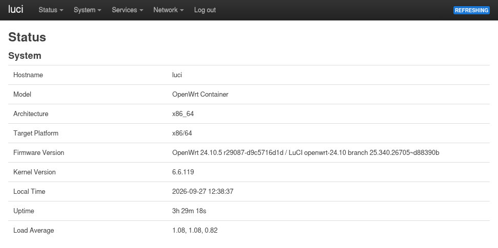

How to Configure Role-Based Access Control¶
This guide describes how to decide who can access the router and what they can do, using luci-sso's roles. Why roles work this way is explained in About Roles and Permissions.
How roles work¶
A role has two halves:
- Who it matches. A
config role '<name>'section in/etc/config/luci-sso, withemailandgrouprules. A role with neither is ignored. - What it grants. The role's
rpcdlogin entry,luci_sso_<name>in/etc/config/rpcd, withreadandwritelists of access groups.rpcdis the OpenWrt daemon that holds LuCI sessions and their rights.
When a user logs in, luci-sso checks their email and groups against the roles in order, from the top. The user gets the first role that matches, and only that one: roles are not merged. The session gets exactly the rights of that role's entry. An email counts only if the IdP marks it as verified (email_verified); see About Roles and Permissions.
A fresh install ships one role, admin. It matches the placeholder admin@example.com, and its entry grants full access (* in both lists). Replace the placeholder with a real address before you enable SSO.
The settings page edits both halves together. On the command line, you edit the first half with uci and the second through the luci-sso ubus object. Both files, and every limit, are described in the UCI Configuration Reference.
What the access lists mean¶
read and write name access groups: the top-level keys of the JSON files in /usr/share/rpcd/acl.d/, such as luci-base, luci-mod-status-realtime or luci-mod-network-config. The file names are not group names: luci-mod-network.json defines luci-mod-network-config, luci-mod-network-dhcp and luci-mod-network-diagnostics. To list the LuCI groups on the router:
for f in /usr/share/rpcd/acl.d/*.json; do jsonfilter -i "$f" -e '@' | grep -o '"luci-[^"]*": {' | cut -d'"' -f2; done
The lists have the meaning rpcd gives them for a password login, because they are an rpcd login entry:
- Entries may be globs (
luci-mod-status-*) and negations (!luci-mod-status-logs). Within a list, negations are checked first. *matches every access group, including groups that are not LuCI's.- Write implies read. A group in
writecan also be read, unless thereadlist negates it. luci-base'swritesection holds the calls that save and apply settings (uci set,uci apply). A role that should change anything needsluci-baseinwrite, as well as the groups for the pages it edits.- Every
readlist also grants theunauthenticatedgroup, which LuCI needs on every page. The settings page and the ubus object add it for you and never show it. Areadlist that negates it, such as!*, is refused.
read |
write |
Result |
|---|---|---|
* |
* |
Full admin. Exactly what the root password login gets on a stock OpenWrt. |
* |
empty | Read-only. Every page can load its data; nothing can be saved. |
* |
specific groups | Read everything; change only what the listed groups allow (include luci-base). |
| specific groups | specific groups | Exactly the groups listed. |
| empty | empty | No access. The user can log in but sees nothing. The settings page shows (none): this role grants no access. |
A CI test logs in both ways, through SSO and with a password, against the real rpcd, and fails if the two ever differ.
Where to change a role¶
Navigate to Services > Single Sign-On and scroll to the Users section. The table lists the roles in the order they are tried. Drag a row to move it.
- To add a role, type its name in the field next to Add and click Add.
- To change a role, click Edit in its row.
- To remove a role, click Delete in its row.
In the role editor, the note above Read Access says: "Permission changes take effect when you click Save at the bottom of the page." The editor's own Save only keeps your edit on the page.
When you click Save or Save & Apply at the bottom of the page, the read and write access go to rpcd straight away. The page shows "Saving role permissions; rpcd is reloading to apply them…", then "Role permissions saved and in force." Emails, groups and the order take effect only with Save & Apply.
Change who a role matches, and the order, with uci:
uci set luci-sso.viewer=role
uci add_list luci-sso.viewer.email='bob@example.com'
uci reorder luci-sso.viewer=1 # position 1: the first role, after the 'default' section
uci commit luci-sso
Change what a role grants through the luci-sso ubus object. Always pass both lists; leave out unauthenticated, which the object adds:
ubus call luci-sso set_role '{"name": "viewer", "read": ["luci-base", "luci-mod-status-*"], "write": []}'
ubus call luci-sso list_roles
ubus call luci-sso delete_role '{"name": "viewer"}'
set_role answers with the lists as stored. After a write, rpcd reloads one second later; list_roles shows "reload_pending": true until it has.
A new role needs both halves. Without its rpcd entry, its users are refused at login with MISSING_RPCD_LOGIN, and the settings page shows Not set: edit and save this role, or its users cannot log in.
Full access¶
The shipped admin role already grants full access. Make it match the real administrator:
In the Users section, click Edit in the admin row. In Email Addresses, replace admin@example.com with alice@example.com. Check that Read Access and Write Access hold *. Click Save in the editor, then Save & Apply.
uci -q del_list luci-sso.admin.email='admin@example.com' # the shipped placeholder
uci add_list luci-sso.admin.email='alice@example.com'
uci commit luci-sso
ubus call luci-sso list_roles # admin: read ["*"], write ["*"]
If the admin entry is missing or grants less, set it:
ubus call luci-sso set_role '{"name": "admin", "read": ["*"], "write": ["*"]}'
Read-only access¶
Leave Write Access empty and list the access groups the user may view. * in Read Access shows everything; to narrow it, name groups or globs.
A common starting point: status and network views, but no changes.
In the Users section, type viewer in the field next to Add and click Add. Fill in the editor:
- Email Addresses:
bob@example.com - Read Access:
luci-base,luci-mod-status-*,luci-mod-network-* - Leave Write Access empty.
Click Save in the editor, then Save & Apply.
uci set luci-sso.viewer=role
uci add_list luci-sso.viewer.email='bob@example.com'
uci commit luci-sso
ubus call luci-sso set_role '{"name": "viewer", "read": ["luci-base", "luci-mod-status-*", "luci-mod-network-*"], "write": []}'
A user with this role sees status pages and network overviews but cannot save changes. LuCI leaves out the menus the role has no access group for. On the pages it shows, the Save & Apply, Save and Reset buttons are disabled. There is no separate read-only notice.

Compare with an admin session, where the menu also has System and Services:

Group-based access¶
If your IdP returns a groups claim, you can match roles by group instead of, or as well as, email. Request the groups scope at the IdP and on the router:
Navigate to Services > Single Sign-On. In Settings, set Scopes to openid profile email groups and click Save & Apply.
uci set luci-sso.default.scope='openid profile email groups'
uci commit luci-sso
Then create one role per group. Put the more privileged role first: a user in both groups gets the first match.
In the Users section, add a role ops_admin:
- Groups:
network-ops - Read Access:
* - Write Access:
*
Click Save in the editor. Add a role sec_viewer:
- Groups:
security-team - Read Access:
luci-base,luci-mod-status-*
Click Save in the editor. Drag ops_admin above sec_viewer if it is not already, then click Save & Apply.
# Full admin for the ops team, tried first
uci set luci-sso.ops_admin=role
uci add_list luci-sso.ops_admin.group='network-ops'
uci reorder luci-sso.ops_admin=1
# Read-only for the security team
uci set luci-sso.sec_viewer=role
uci add_list luci-sso.sec_viewer.group='security-team'
uci reorder luci-sso.sec_viewer=2
uci commit luci-sso
ubus call luci-sso set_role '{"name": "ops_admin", "read": ["*"], "write": ["*"]}'
ubus call luci-sso set_role '{"name": "sec_viewer", "read": ["luci-base", "luci-mod-status-*"], "write": []}'
A member of both groups gets ops_admin. The login's log line names the other match: mapped to role 'ops_admin', the first match; also matched: sec_viewer.
A user who needs two sets of rights¶
A session carries one role's rights. When some users need what two roles grant, create a role that grants both, and put it above the narrower roles.
For example, viewer reads status and network pages, and a few users should also edit network interfaces. Give those users a net_operator role:
Add a role net_operator:
- Email Addresses:
charlie@example.com - Read Access:
luci-base,luci-mod-status-*,luci-mod-network-* - Write Access:
luci-base,luci-mod-network-config
Click Save in the editor. Drag net_operator above viewer, then click Save & Apply.
uci set luci-sso.net_operator=role
uci add_list luci-sso.net_operator.email='charlie@example.com'
uci reorder luci-sso.net_operator=1
uci commit luci-sso
ubus call luci-sso set_role '{"name": "net_operator", "read": ["luci-base", "luci-mod-status-*", "luci-mod-network-*"], "write": ["luci-base", "luci-mod-network-config"]}'
Charlie can view status and network settings, and edit network interfaces, but cannot reboot or touch system configuration. If Charlie also matches viewer, for example through a group, the order keeps net_operator first.
Verify a role is working¶
Check that SSO is enabled:
uclient-fetch -q -O - --no-check-certificate 'https://127.0.0.1/cgi-bin/luci-sso?action=enabled'
# Expected: {"enabled": true}
{"enabled": false} means SSO is turned off. An HTTP 500 error instead of JSON means SSO is turned on but the configuration was rejected; the log line Configuration rejected: … before [500] CONFIG_ERROR names the option.
Check the role's permissions as rpcd holds them:
ubus call luci-sso list_roles
Then log in as the user and confirm the LuCI menus match what you expect. Each login logs the role it chose:
Navigate to Status > System Log and filter for luci-sso.
logread -e luci-sso | tail -30
luci-sso[1234]: User [sub_id: c775e7b757ede630] mapped to role 'viewer' [session_id: 8e25f313865ad01a]
[403] USER_NOT_AUTHORIZED, aftermatched no roles: the user's email or groups match no role. Check the exact values the IdP sends. Email matching ignores case, but must otherwise be exact; group matching is case-sensitive. AnIgnoring the unverified emailline before it means the IdP did not mark the email as verified, so it was not matched; see Provider Compatibility.[500] UBUS_LOGIN_FAILED, after aMISSING_RPCD_LOGINline: the role has norpcdentry. Save its permissions on the settings page, or withset_role.- The wrong role: the line says
the first match; also matched: …. Move the role you expect higher up.
If the user logs in but a page they should see is missing or read-only, look for this line from the login:
luci-sso[1234]: Role 'viewer' grants unknown access group 'luci-mod-network'; no ACL file defines it
It names a read or write entry that matches no access group, usually a file name used instead of a group name, or a typo. Globs and negations are not checked this way.
Change access for users already logged in¶
A permission change reaches users who are logged in. Each write through the settings page or the ubus object makes rpcd reload a second later, and the reload rebuilds every session of that role from its entry. Deleting a role's permissions leaves its sessions with no rights at that reload.
Changes to emails, groups and the order apply from the next login only. A session keeps the role it was given. To take a user out of a role at once, remove them from the role, then end their sessions.
-
List the sessions. Under its session ID, each SSO session shows its role as
username(sso:<role>) and, when the IdP marked it as verified, the user's email asoidc_user:ubus call session list | grep -E '"(ubus_rpc_session|oidc_user|username)"'"ubus_rpc_session": "01c8b0237fb048cb1e8042e022e51baa", "oidc_user": "bob@example.com", "username": "sso:viewer" "ubus_rpc_session": "7d2f95c0e6a14b0c9a5d3f8e21b6c4aa", "username": "sso:ops"oidc_userholds only an email the IdP sent withemail_verified: true, even withrequire_email_verifiedoff, so a user cannot label a session with an address they typed in themselves. A session with nooidc_userbelongs to a user whose IdP sent no email, or no verified one; such a user logged in through agrouprule, or through anemailrule withrequire_email_verifiedoff. It can only be told apart by its role: to remove such a user at once, end every session of that role, and let the others log in again. -
Destroy each of that user's sessions by its ID:
ubus call session destroy '{"ubus_rpc_session": "01c8b0237fb048cb1e8042e022e51baa"}'
The user's next LuCI request is refused, and their next sign-in goes through the updated roles. Other users are not affected. The user may still be signed in at the IdP; revoke that there.
Edit the rpcd entries by hand¶
You can edit a luci_sso_* entry in /etc/config/rpcd over SSH, for example to script it. Follow the entry's rules, or its users cannot log in:
- Keep the section type
loginandoption username 'sso:<role>'. Otherwise the login fails withMISSING_RPCD_LOGIN. - Never add a
passwordoption, not even an empty one. The login fails withINSECURE_RPCD_LOGIN:rpcdwould accept a password login with that entry. - Use
list readandlist write.rpcdignores a singleoption read, so it grants nothing. - Keep
unauthenticatedin thereadlist, or a pattern that matches it. Without it, LuCI shows "Session expired" on every page. Saving the role through the settings page orset_roleadds it back, and so does removing and reinstalling the package.
Then reload rpcd, so that sessions already open get the new rights:
/etc/init.d/rpcd reload
Reference¶
- Role options, the
rpcdentry and the ubus object: UCI Configuration Reference. - Error codes from role mapping and session creation: Log Messages.